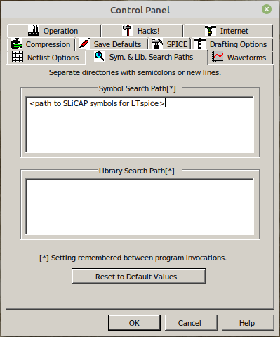
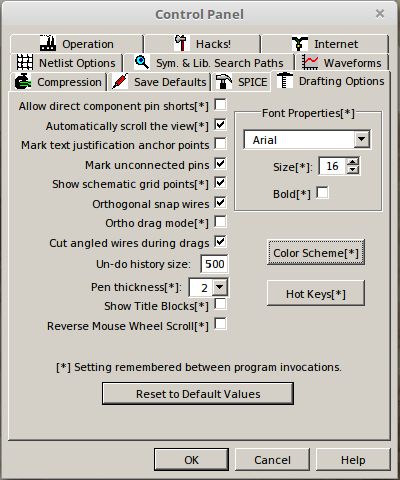

Schematic capture¶
SLiCAP accepts SPICE-like netlists as input. Many schematic capture programs can be configured to generate such netlists. SLiCAP comes with symbol libraries for LTspice, gSchem and its fork lepton-eda.
The syntax that should be used for composing SLiCAP netlists is described in the Device Models section.
LTspice¶
LTspice can be used for netlist generation. LTspice works with Windows and Linux (under Wine). A version for MAC is also available. The MAC version of LTspice differs from the windows version and netlist generation from within the SLiCAP (python) environment for this version is not supported. Netlists can also be generated manually. Go to LTspice for the latest version.
For an overview of SLiCAP symbols for LTspice, please view the LTSpice section.
Configure LTspice for use with SLiCAP
SLiCAP circuits should be made with SLiCAP symbols (and not with the default LTspice symbols). LTspice symbols for SLiCAP are placed in the LTspice/ folder in the SLiCAP main library path that you have selected during installation.
Start LTspice
On the menu bar click
Tools > Control Panel. This will bring up the LTspice control panel:
On this control panel select the
Netlist Optionstab and select the options as shown below:
Then select the
Sym. & Lib. Search Pathstab and enter the full path to theLTspice/folder of your SLiCAP install path. This directory contains all the SLiCAP symbol definitions (‘.asy’ files) for LTspice:Then select the
Drafting Optionstab and change the font size and deselect the “Bold” checkbox as shown below. If you want, you can also select different colors for your schematics.
Gschem¶
The open source gschem package can also be used in conjunction with SLiCAP. SLiCAP symbols for gschem are included in the gSchem/symbol/ folder in the SLiCAP main library path that you have selected during installation.
For an overview of SLiCAP symbols for gSchem, please view the gSchem section.
The gnet-spice-noqsi spice netlister should be used for netlist generation. SLiCAP has a built-in instruction for netlist generation with gschem and this netlister.
The use of gschem as front-end for SLiCAP has been tested under Linux and under Windows.
Linux installation
Under Linux you can install it with the package manager. Please visit gEDA for more information. In some Linux distributions gschem may be replaced with lepton-eda.
The spice netlister for gschem can be found in the gSchem/gnet-spice-noqsi-master/ folder in the SLiCAP main library path that you have selected during installation.
Linux installation of gschem and the gnet-spice-noqsi is well documented and straightforward.
After installation of gschem you need to create or modify the file: .gEDA/gafrc in your home directory with the contents:
(reset-component-library)
(component-library "<path to SLiCAP symbol Library>" "SLiCAP")
If you wish to have a light background you can create or modify the file .gEDA/gschemrc in your home directory with the contents:
(load (build-path geda-rc-path "gschem-colormap-lightbg")) ; light background
Windows installation
A windows installer for gschem can be downloaded from: gEDA-20130122.zip.
Windows installation of gschem is straightforward: simply extract the gEDA-20130122.zip file and run the Windows installer. In the drop down menu of the “Select Components” dialog box select “Program only”, for the rest accept default settings.
The spice netlister for gschem can be found in the gSchem/gnet-spice-noqsi-master/ folder in the SLiCAP main library path that you have selected during installation.
The netlister is installed by copying the file gnet-spice-noqsi.scm from the extracted gnet-spice-noqsi.zip to: C:\Program Files (x86)\gEDA\gEDA\share\gEDA\scheme\gnet-spice-noqsi.
You need to create or modify the file gafrc in the C:\Users\<userName>\.gEDA\ directory. It should have the following content:
(reset-component-library)
(component-library "C:/Program Files (x86)/gEDA/gEDA/share/gEDA/sym/slicap")
The component library is found in the in the gschem/symbols/ folder in the SLiCAP install path. Create a directory C:\Program Files (x86)\gEDA\gEDA\share\gEDA\sym\slicap and copy the component library to this directory.
If you wish to have a light background you can create or modify the file gschemrc in the C:\Users\<userName>\.gEDA\ directory. Its contents must be:
(load (build-path geda-rc-path "gschem-colormap-lightbg")) ; light background
Be sure you save these two files gafrc and gschemrc without any file extension.
Lepton-eda¶
Lepton-eda is a fork of geda-gaf. Please visit https://github.com/lepton-eda/lepton-eda for more information.
SLiCAP symbols for lepton-eda are included in the lepton-eda/ folder in the SLiCAP main library path that you have selected during installation.
For an overview of SLiCAP symbols for lepton-eda, please view the gSchem section in the help file.
After installation of lepton-eda you need to create or modify the file: .config/lepton-eda/gafrc in your home directory with the contents:
(reset-component-library)
(component-library "<path to SLiCAP symbol Library>" "SLiCAP")
If you wish to have a light background, you can create or modify the file .config/lepton-eda/gschemrc in your home directory with the contents:
(load (build-path geda-rc-path "gschem-colormap-lightbg")) ; light background
Be sure you save these two files gafrc and gschemrc without any file extension.
The gnet-spice-noqsi spice netlister should be used for netlist generation. SLiCAP has a built-in instruction for netlist generation with lepton-eda and this netlister.
The spice netlister for lepton-eda can be found in the lepton-eda/gnet-spice-noqsi-master/ folder in the SLiCAP main library path that you have selected during installation. An install script is provided.
For compact node names (important for use in symbolic expressions) you need to reconfigure the default net name prefix.
This is how it should be done under Ubuntu-based Linux systems:
sudo lepton-cli config --system "netlist" "default-net-name" ""
The install script for the netlister also executes this command.
Display schematics on html pages¶
With LTspice you can print schematics to a .PDF file using a PDF printer.
With gschem running under MSwindows you can write your schematic file to a .PDF file.
For proper display of schematics on html pages these .PDF files need to be be converted to .SVG files, you can use pdf2svg or `pdf2svg <https://www.pdftron.com/documentation/cli/download/windows/>`_for this purpose. Under Linux and Mac OS you can install ‘psd2svg’ from the package manager.
With gschem running under Linux or Mac OS you can write your schematic file to a .EPS file.
.EPS files can be converted into .PDF files using the epstopdf command.
Ghostscript is often available in the package manager of Linux distributions. Otherwise Ghostscript versions can be downloaded from: Ghostscript.
With lepton-eda running under Linux you can print to pdf or svg.
Inkscape .svg editor¶
When printing a schematic from LTspice with a PDF printer, the full path of the file will be listed at the bottom of the page. After the .PDF file has been converted into a .SVG file (see above), you can use inkscape to edit this SVG file and delete the footer.
Inkscape runs under Windows, Linux and Mac OS. Inkscape versions can be downloaded from: inkscape.org.
If you import PDF files with Inkscape use the import settings Poppler/Cairo import. With this selection, fonts will be converted to Bezier curves.